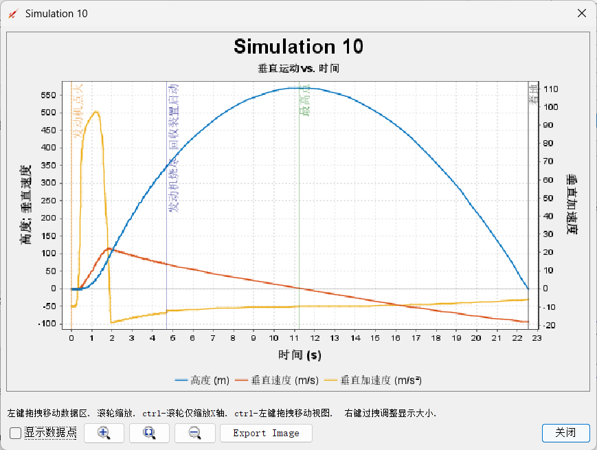
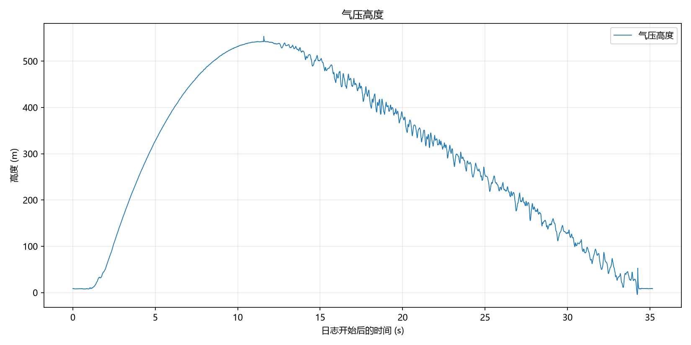
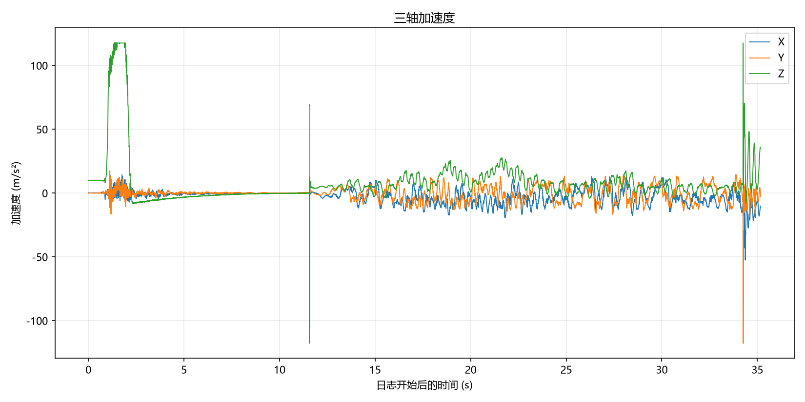
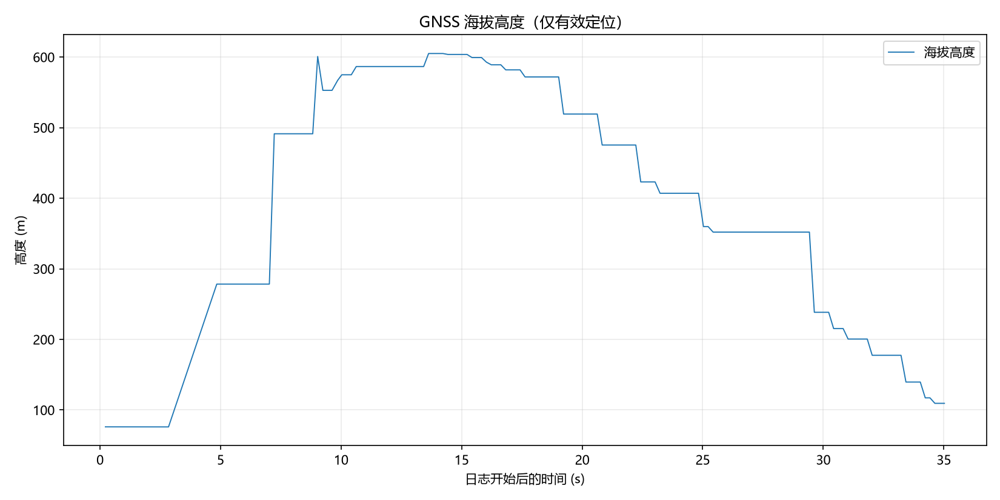
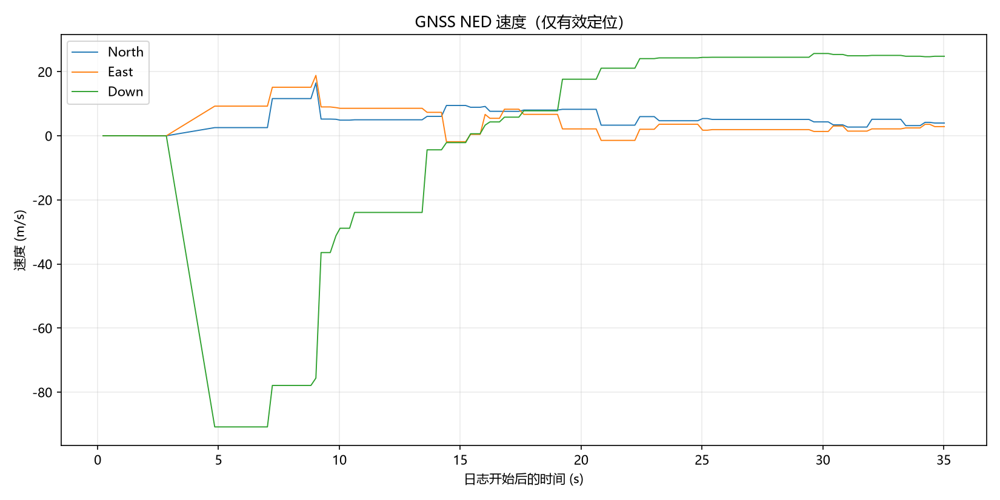

Oct_3_2026
文档AI等级：0
- 发射流程手册：发射流程手册.docs
- 航电操作手册：操作手册V2.0.docs
发射概述
发射日期预计2026年10月3日，地点河南省 登封县郊区。本次发射使用V2.0版本航电。由于本次发射是第一次发射，为了方便寻找火箭落点以及减少可能的法律风险，本次目标高度定为300米，300米是6cm箭体直径在天空中人眼的理论观测距离最大值。
人员
共计三人 小叮当 白 某科学的超级屑
发射日志
Sep 30 2026
小叮当上午10点到达封丘县迅捷商务宾馆，与白在酒店会面，计划在1-2号期间进行两次试车，第一次试车验证比冲，第二次浇筑时，按照300m预计高度以及对应比冲，通过OR反算出实际总冲和对应燃料孔径，浇筑完后第二次试车验证可行性。确认无问题后第三次浇筑火箭实际使用药柱。下午白回家进行第一次浇筑，小叮当去试验新无人机，并改写试车台相关代码，要求本次试车台能够可靠地输出准确推力和时间戳。预计明天早上9.30在封丘县南与耕地交界处进行第一次试车。
Oct 1 2026
小叮当与白在早上10点左右到达封丘县南边的一个土工地进行发动机试车，固定好试车台和发动机后，尝试对试车台进行初始化并模拟试车操作。接连出现两个问题：SD卡无法被成功读取，或SD卡在测试中断联，以及HX711模块断联。经过排查后，确认都是硬件问题，接触不良或者SD卡松。虽然硬件存在很强的不可靠问题，但为了试车的推进，在某次进入正常读取后，进行了点火试车。发动机点火正常，火焰因为后方压试车台的砖头而转向，令试车台的最下方铝型材小部分熔化，发动机工作后，被喷出位置存在非常多白色固体残留，喷口处覆盖了一层厚度约0.5-1mm的白黄色固体残留，猜测是内部的塑料燃料壳体被熔化。查看记录数据，发现在读取时，只读到了推力最大点后几个样本后断联，串口显示断连原因为SD卡连接失效。推测原因为最大推力时的振动导致SD卡接触不良。提出解决措施：对于HX711和SD卡，尽可能将其连接固定牢固。对于SD卡失效就停止采集的逻辑，更改软件逻辑，使其不管在SD卡是否正常的请款下都会同时通过串口发送数据，多一层保障。
通过对残缺的推力数据进行分析，原始数据不加后续拟合的话，总冲为142.67Ns，比冲61.91s，通过线性拟合的方式补全剩余的一些数据后，计算总冲为158.2Ns,比冲为68.84。比冲明显偏低。KNSB理论比冲为164，论坛普遍测试参数为90-120，小叮当在24年10月份的金属30mm发动机的实测比冲为98，推测本次比冲偏低的原因有两个：1KNSB内的硝酸钾虽有研磨，但未过200目筛，2燃料在制作过程中烘干不足，可能存在吸水现象。但由于本次火箭的目标高度300米的总冲需要远低于此发动机的最大总冲（将线性补全后的数据代入进OR计算得到理论高度为463米。所以比冲低并不会造成性能不够的影响。
下午2：30左右，携带飞控仓，地面站，前去新乡县南部的一个公园进行飞控完整性测试，第一个测试的是拉距测试，将飞控带电池固定于无人机上，启动无人机升高至100米，地面站首先采用的是测试用的短棒天线，随着无人机不断拉远，遥测信息在100米高，700米远的位置失联。随后换至实际发射时采用的11DBi，6单元八木天线进行测试，距离明显提升，无人机飞向高度100米，距离1000米的位置，仍然能保持有效连接。没有进行极限通讯测试，在测试过1000米的距离后返航。随后进行完整火箭周期的飞控测试，首先打开飞控，自带STANDBY状态，擦除全片，进入ARMED状态，用手模拟剧烈Z轴加速度后观察，10秒后电子火柴成功启动点火，随后10秒钟后自动进入LANDED模式并发出节奏性蜂鸣器响声。最后，进行了GPS精准度测试，由白手持飞控沿着公园小路进行行进，地面站观察经纬度信息并上传QGIS离线地图，手动复制粘贴采样大约10个点，发现位置精准度较好，能够指示火箭方位。但是，本次试验没有进行Flash的读取试验。回到酒店，对python地面站进行更改，使其能够通过虚拟串口将飞控GNSS信息时时传到QGIS，这样就不需要手动进行来回复制了。
- Oct_1_2026 试车视频：Oct_1_2026 试车视频
本次试车采用15mm内径，10-2日下一次试车采用22mm内径，22mm内径的选择是基于300m目标高度在Openrocket内得出的比冲反算结果。
- Oct_1_2026 试车原始数据（无补全）：Oct_1_2026 试车原始数据（无补全）
Oct 2 2026
效仿前一天，白于早上十点左右到达酒店，组装试车台并且测试，发现新代码仍然存在当SD卡掉线后堵住全部循环的现象，于是便不断更改试车台代码，发现AI生成的试车台arduino驱动代码过于复杂且在第二次更改时也没有让SD卡堵住进程的问题解决，于是手动调整代码使其在SD卡第一次写入失败后置标志位为false，而后跳过SD卡写入，只串口记录，这版代码测试无问题，但在有一次测试中，SD卡又出现断联的现象且无法恢复，这代表SD卡模块的硬件极其不稳定，索性删除SD卡模块的所有驱动代码，仅使用串口输出用于记录。
中午十二点左右到达试车地点，组装试车台和发动机，准备试车，无人机升空开始录制，但后来发现没有录制上。发动机工作良好，数据被串口监测器成功记录。
本次试车记录到了完整的推力数据，但是由于发动机被数个固定环固定，所以由于这个环可能导致了发动机在往前推进时卡住，然后无法回弹，造成了正常推力曲线的基础上后面出现了一个小的数据保持的平台。经过讨论这个平台并非发动机实测数据，所以通过将发动机推力衰减段进行线性拟合的方式去掉了这一段错误数据。
本次试车，中心孔径为22mm，总冲量195.6Ns，燃料质量190g，比冲104.97s，本次比冲明显接近于正常KNSB比冲。相较于上次的70左右的比冲，我们怀疑是上次推力计采集的数据由于中途中断，我们错误的判断当时中断时的一小段推力下降为燃烧完毕，导致第一次试车时实际总冲被严重低估。
- Oct_1_2026 推力数据：Oct_2_2026 推力数据 22mm
通过获得第二次也就是今天的推力曲线并将其导入进Openrockt进行模拟。并且重新测量火箭各个部件的精确质量，我们获得以下的模拟数据：


屑于下午5点到达酒店并住宿。
Oct 3 2026
上午10点左右，白到达酒店，开始总体总装。在总装过程中，出现了一些装配上的不便利，以及发现了一系列设计上的问题。火箭在中午12.30左右完成总装，在1.30装车，开往发射场。
发射场选在新乡南部的黄河滩地耕地上，其面积大于1*1km公顷，大于OR模拟出的在6m/s风速下的最大漂移距离500m。
在发射场，各人员按照预定计划进行部署，按照发射流程手册。架设发射架->飞控上电->测试飞控通信->测试GNSS信息有效性->安装点火系统 逐一通过。
下午4.40左右，风向西南风，天气阴。所有人员撤离发射点，白在观察点点击远程点火按钮无反应，推测为点火器距离太远断联。等待一分钟后，走近约10-20米重新点击按钮，成功点火，火箭在下午10.43分点火并发射升空。发动机工作正常，箭体轨迹近乎笔直，火箭在升空约1秒后尾迹消失，消失于视野，肉眼无法追踪。
小叮当在车内观察地面站遥测信号，遥测系统信号优良，观测到气压计高度以既定遥测刷新率不断变化，从地面逐渐升至300米-400米-500米-540米，在大概540米的高度下，火箭状态从ASCENT转换为DESCENT，近乎同一时间，天空中传来一声明显的闷响，这代表开伞成功，或者说开伞信号在预定的位置成功触发并点燃开伞药。转到QGIS页面，可以看到火箭坐标点正在以能观察到的连续性和速度从发射点朝向东北方向移动。随后，高度信息开始迅速降低，而遥测状态在大约10秒后从RECEIVING变成LOST，代表遥测失联，而最后的遥测包显示高度信息为8m。结合遥测信息在地面附近失联与遥测在开伞后短时间内失联，小叮当认为是降落伞没有打开，可能是伞包卡住，导致火箭自由落体下坠到地面使得飞控断联。
观察QGIS内的最后坐标，发现其最后坐标在发射点东北方向约200-300米区域，于是启动无人机向发射点东北方向寻找。同时在场人员(白，屑以及白和小叮当的家人)共计9人开始集体向东北方向寻找。本次寻找高估了无人机的作用，无人机在升空后由于操作屏幕较小，且阳光较为强烈，无法看清屏幕细节，无人机寻找无结果。但是人员寻找陆续有了结果，首先是找到一节伞仓，伞仓已经断裂，而降落伞在内部并未展开，头锥还卡在伞仓上部并未弹出，推测原因是在开伞药点火后，并未按照预想的流程将头锥和降落伞抛出，而是伞仓的中部区域无法承受压力而在z轴裂开并断裂。随后捷报频传，找到了航电舱和一些伞仓碎片，航电舱基本保存完好，PCB板没有受损，外壳除了与发动机仓和伞仓的连接处折断外，其余无明显受损。电池的从航点板上脱落，电池无受损，推测是在高速硬着陆时电池被冲击力甩开，挣脱了两个扎带的束缚并扯掉了电源线，导致整板断电，遥测失联。到此时，航电舱和伞仓残害均找回，剩余发动机舱未找到，在继续寻找约半小时后无结果，遂放弃。
在回收了现场的发射架和工具后，将所有物品装车并撤离，返回酒店进行一些数据处理操作。飞控的飞行日志信息从flash内成功被读取，可视化图表显示火箭日志完整的经历了火箭的上升段和下降段，各传感器和系统运行中共计零个错误。
气压计高度记录最高离地高度为553.62米，GNSS高度最大604.989米（海拔），GNSS记录最大垂直速度为90.832米。Logger原始信息将储存至avionics板块。
小叮当注：航电模块贡献与对外使用说明
本独立航电系统由我个人负责设计与开发，未接受团队资金资助。参与团队项目不代表本系统及其相关成果可直接以“穹宇航天”名义对外发布。
未经我事先同意，请勿将本系统的相关数据、图表、仿真结果及软硬件资料用于个人或团队的对外展示、宣传或其他创作。经同意使用时，应明确注明成果来源及我的实际贡献，不得通过省略署名或误导性表述，使他人误认为该成果由发布者独立完成。
以下是一些飞控记录的关键信息的图表化展示。




- 飞行数据可视化模拟
下载全部飞行日志原始信息：
-
Oct_3_2026 原始飞控信息（无切除飞行前空余时间）：
-
Oct_3_2026 飞控信息：
复盘分析
飞控&软件复盘
本次飞控软件总体工作正常，完成了预计的采集-记录-发送-读取流程，在对后续飞行数据的分析后，软件在整个飞行过程中检测出0次已挂载的异常/错误/溢出。验证了软件架构在动态状态下的鲁棒性。
机械结构&机械设计复盘
机械设计需要分为两部分分析，一方面，发动机在本次任务中工作良好，在三次试车和最后的试飞中保持了正常工作且一致性在最终飞行中得到了保证。但另一方面，箭体由于没有进行良好的设计，在装配时产生不少困难，且最终直接导致了伞仓强度不够无法承受开伞时的压力而裂开（推测）。
发动机虽然没有出现严重的问题，但是最后一次装配时发现这个发动机只在堵头和喷口的管壁处安装了O型圈，而没有在燃料端口与发动机堵头处安装O型圈。不清楚此设计是否经过了严格论证。建议以后设计时加入端头O型圈。
机械相关问题
1：级间连接环的最初设计过于简陋，连接环内壁太窄，且使用销钉进行连接，维护性较低。
2：火箭内壁2mm厚度过小，且在连接处没有外部加强筋，强度不够。而级间连接环也必须适配这个厚度，这可以解释火箭断裂处为伞仓和发动机仓内壁与级间连接环的交汇处的原因。
3：发动机仓内的发动机固定环没有考虑公差配合，无法套入发动机。
4：尾翼太薄，且固定方式没有经过论证，强度不够。
5：航电仓与飞控固定方式为强力压入，没有软性缓冲。
6：降落伞与箭体没有专有的固定锚点。
测试相关问题
1：试车台硬件鲁棒性极差，主要体现在SD卡经常断连。最终解决方法为放弃SD卡使用串口进行读取推力信息。
2：由于时间与场地问题，本次发射没有提前进行高空开伞测试，仅有的一次开伞测试是在地面进行且没有完整实验参数记录。地面开伞测试没有问题，但是由于装药量没有恒定记录/实际工况改变等原因，导致实际发射时，药量为凭感觉。开伞时伞仓爆裂而无法弹出降落伞。
3：无人机的视频记录存在误操作。在第二次发动机试车时，已经打开无人机的录影功能，且屏幕上显示录影的红点也有了变化，但后续回看时发现并未记录。怀疑：1按按钮时实际已经在拍摄，所以以为的“开始拍摄”实际是终止拍摄。2拍摄按钮为二段钮子，可能拍摄时只按到了第一段对焦。
4：试车台校准/采样率问题：在最最开始的试车里，试车台没有经过严格的物理量校准，且没有加入时间戳，导致记录数据信息量归零。本次工程的试车台代码和硬件信息还未正规化。
5：由于之前的错误推力数据，导致在OR内模拟的高度曲线为夸张的3000多米，而在对试车台进行标准化改进后重新获取推理数据导入OR，算出最大高度为540米，经过比对，高度曲线和加速度曲线与气压计和GNSS实测的数据极其相近。
分析与反思
1：合理利用模拟与仿真。这里的模拟与仿真指的是广义上对于设计的“可预测性”，比如提前预测箭体某个部件在受力状态下的强度以来进行合理的壁厚规划，获得准确的OR数据以辅助飞控进行高度判断等。把复杂的系统工程细分为多个可被建模量化的数学问题，并且估算模拟的真实性。每个部件的设计都应该依据一定量的“已知信息”推导而来，尽量减少设计中“拍脑袋投骰子”决定的比例。
2：良好的产品不但需要优秀的设计，还需要大量的测试。只有尽可能贴近真实的测试才会知道在实际工况下会发生什么事情。比如如果提前进行了高空开伞测试，那么伞仓强度不足和装药量的相关问题就会提前显现。
3：数据和日志的记录极为重要。格式化、可被查阅的记录信息是日后进行复盘反思的重要依据。对于软件系统来讲，源码应该建立专用文件夹仓库并使用git进行版本管理。对于硬件和机械的多种类型文件，也应该建立良好的备份制度。
4：嵌入式系统并非简单的副产物，而是一门复杂的学科。由于软件问题而导致全部工程前功尽弃的案例屡见不鲜。对于硬件，也应该在关键的部件上采用PCB集成。
5：一切有关飞行的工程都应该按照最恶劣工作情况假设。对于软件，应该考虑到一切可能的运行问题并建立完善的错误处理机制，毕竟飞行器不像一个类似电子门铃的东西，如果在飞行中突然程序卡死，没有人能够去为其重新启动。对于硬件和机械，要尽量按照 高温高压高速 的极端环境标准来设计每个零部件，哪怕无法获得可靠的仿真数据，也应该将其设计到尽可能夸张的强度状态，并设计相关的防护措施。